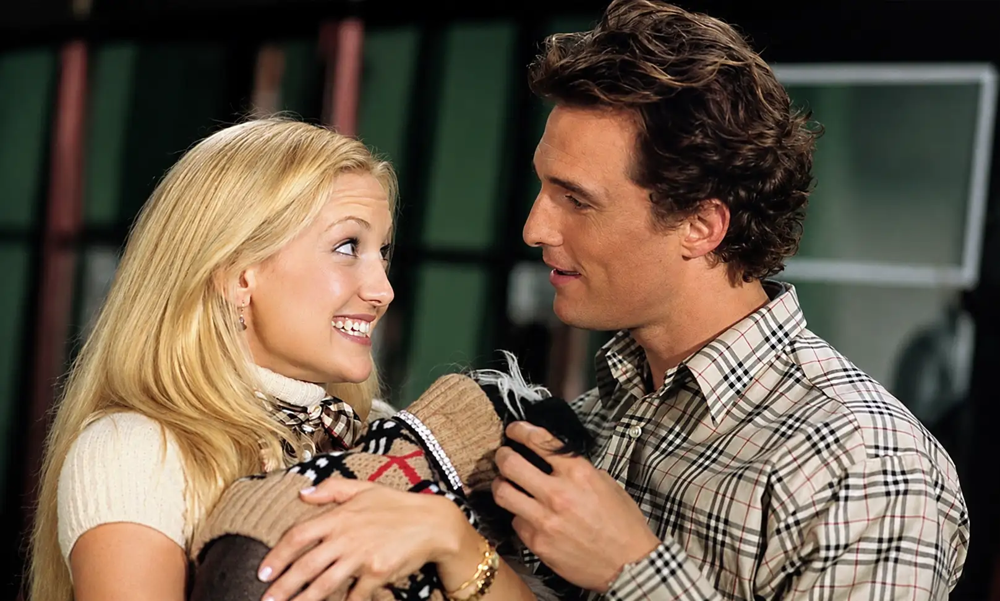

Dirección y guión
La película fue dirigida por Donald Petrie, conocido por trabajar principalmente dentro de la comedia.
El guion estuvo a cargo de Kristen Buckley, Brian Regan y Burr Steers, tomando como punto de partida el libro ilustrado homónimo de Michele Alexander y Jeannie Long.
Estudio
Uno de los espacios utilizados durante el rodaje fue el Studio City Toronto, ubicado en Toronto, Canadá. La película también aprovechó diferentes espacios reales tanto de Toronto como de Nueva York.
Datos del rodaje
Una característica interesante de la producción fue el uso de improvisación. Algunas escenas famosas fueron modificadas durante el rodaje.
Por ejemplo, en la escena en la que Andie interrumpe la noche de póquer de Ben, Kate Hudson improvisó lanzar una bandeja de verduras hacia los hombres. Aunque Donald Petrie sabía que lo haría, varios actores reaccionaron genuinamente sorprendidos.
También hubo improvisación durante la escena en la que Andie presenta al perro y comienza a besar a Ben.
